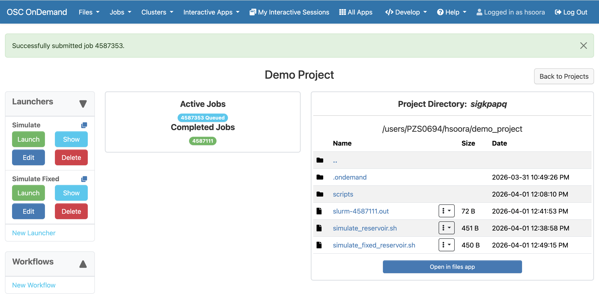
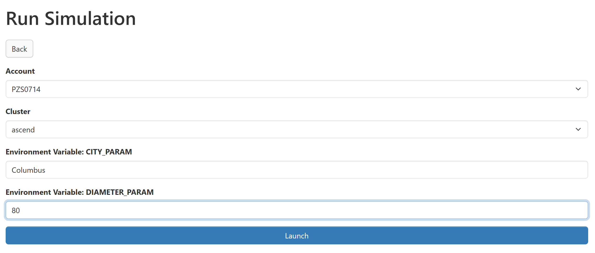
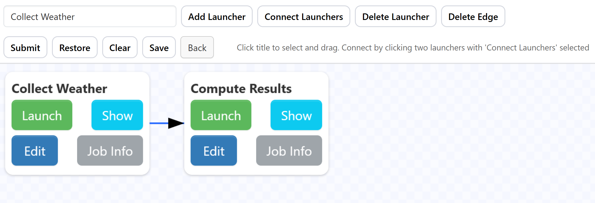
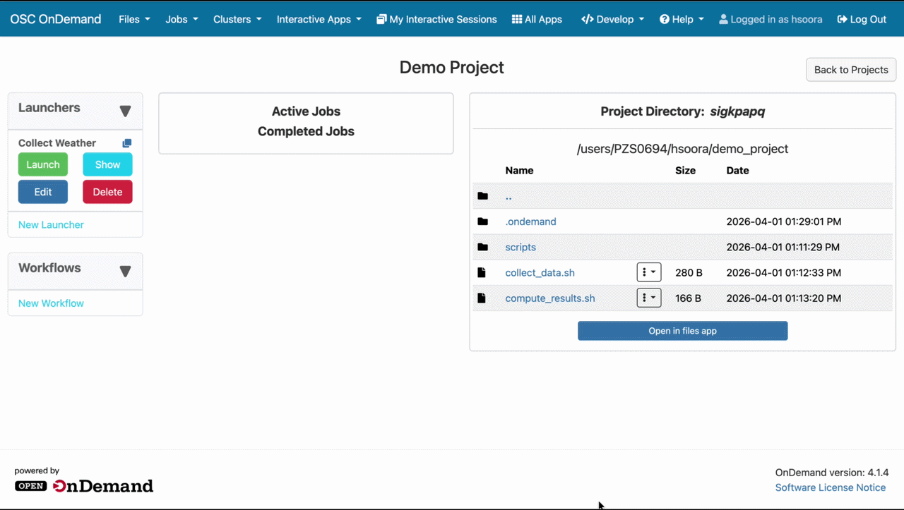

Tutorials: Project Manager
The project manager is designed to make it easy to submit scripts to your scheduler. For this example, let's assume you have a system of shell scripts that simulate the net change in an ideal reservoir over the last seven days, given a city and diameter of the reservoir.
Assume these scripts currently exist on your local machine with the following structure:
demo_project/
├── scripts
│ ├── compute_volume.sh # USAGE: ./compute_volume.sh WEATHER_JSON DIAMETER -> NET_CHANGE
│ ├── geocode.sh # USAGE: ./geocode.sh CITY -> LAT_LONG_JSON
│ └── import_weather.sh # USAGE: ./import_weather.sh LAT_LONG_JSON -> WEATHER_JSON
|
└── simulate_reservoir.sh # USAGE: ./simulate_reservoir.sh CITY DIAMETER -> NET_CHANGE
where simulate_reservoir.sh coordinates the smaller scripts as follows
#!/usr/bin/env bash
# Usage: ./simulate_reservoir.sh "City Name" DIAMETER_M
set -euo pipefail
CITY="$1"
DIAMETER_M="$2"
TMPDIR="$(mktemp -d)"
trap 'rm -rf "$TMPDIR"' EXIT
GEOCODE_JSON="$TMPDIR/geocode.json"
WEATHER_JSON="$TMPDIR/weather.json"
./scripts/geocode.sh "$CITY" > "$GEOCODE_JSON"
./scripts/import_weather.sh "$GEOCODE_JSON" > "$WEATHER_JSON"
./scripts/compute_volume.sh "$WEATHER_JSON" "$DIAMETER_M"
The contents of compute_volume.sh, geocode.sh, and import_weather.sh are left
as an exercise for the reader.
Initializing a Project
Now let's say we want to submit these jobs to the scheduler. We begin by opening the Project Manager, the third item under the 'Jobs' tab in the navigation bar. From the Project Manager, we select the 'Create a new project' button on the upper right. Since this will be a personal project, we only need to provide a name and icon for the new project, and press 'Save'.
Saving your new project will return you to the Project Manager, where you will see your new project listed. Clicking on the new project's title will open its project dashboard, showing a blank project.
To add our existing scripts into the project, we first click on the 'Open in files app' button below the project directory. This takes us to the file browser, where there is a button to upload from our machine.
After uploading the scripts, we can return to the project dashboard and see a similar file structure in the project directory:
PROJECT_DIRECTORY/
├── .ondemand/
├── scripts/
│ ├── compute_volume.sh
│ ├── geocode.sh
│ └── import_weather.sh
|
└── simulate_reservoir.sh
Before continuing, you should make sure that the files in the scripts/ directory are all executable,
so they can be called directly from your controller script. simulate_reservoir.sh, and any other scripts
we want to submit, do not need to be executable to be submitted to the scheduler.
Adding a Launcher
To submit these scripts to the scheduler, we start by clicking the 'New Launcher' button on the left side of the project dashboard. We will give this launcher the name 'Fixed Simulation', and press 'Save'.
After saving the launcher, it will appear in the list of launchers on the left side of the dashboard. We can
customize the form for the launcher by pressing the 'Edit' button on the launcher card. This takes you to an
interactive form builder, where you can add form choices. All new launchers will be created with at minimum
cluster and script fields, as well as any others your center may have defined as
default launcher items.
For the purpose of this example, let's assume that the blank launcher only has those two fields. We can add an 'Account' field by pressing 'Add new option' in the launcher editor, selecting 'Account' for the new field, and pressing 'Add' to include it on the form. This creates a form item labeled 'Account' that should default to your primary account. If you want the script to run with a different account, you can press the 'Edit' button beneath the field to change the available options or keep it fixed to a single account.
Once the account field is correctly configured, we can press 'Save' at the bottom of the launcher editor, and see a confirmation message that the update was successful.
This is enough already to submit the script, but if we run it as is, we are bound to get a $1: unbound variable
error. This is because we have the script configured to accept command line arguments, but these are not being passed
by the scheduler. There are several ways of fixing this, but the most basic would be to hard code the variables in
simulate_reservoir.sh so that it is able to run without arguments. To do this, let's create a copy of
simulate_reservoir.sh titled simulate_fixed_reservoir.sh, and change the top of the file to read
#!/usr/bin/env bash
# Usage: ./simulate_fixed_reservoir.sh
set -euo pipefail
CITY="New York"
DIAMETER_M="50"
TMPDIR="$(mktemp -d)"
...
Now we can edit our launcher again, and see that the new script simulate_fixed_reservoir.sh is available
in the scripts selection. Since we know it will break if it runs with simulate_reservoir.sh, we can
edit the script option, select simulate_fixed_reservoir.sh from the drop down, click 'Fixed Value' to
prevent you from accidentally running a different script, and save the form. Now we can click the 'Show'
button to fill out this form. Since we have already made sure the account and script fields were set
correctly, the only thing we have to fill out is the cluster to run it on. Once we do that and press 'Launch'
at the bottom of the form, we will be redirected back to the project dashboard and see our job queued.

Leveraging Launcher Forms
You may have noticed a slight problem with that initial approach. Hard coding the values solves the immediate issue of removing the need for arguments, but it means we have to go and edit the script each time to change these values. If we had to run this script for 20 different cities, for example, that is a lot of manual editing to prepare the next run.
To make this more efficient, we can use launcher forms to set environment variables that will be available to
the script we run. First, we will make another copy of simulate_reservoir.sh, titled
simulate_reservoir_from_env.sh, and change the start of the file to read
#!/usr/bin/env bash
# Usage: ./simulate_reservoir_from_env.sh
set -euo pipefail
CITY="$CITY_PARAM"
DIAMETER_M="$DIAMETER_PARAM"
TMPDIR="$(mktemp -d)"
...
This time, let's create a new launcher. Instead of creating from scratch and re-doing all the work of adding
the account field again, we can use the 'Copy Launcher' button in the top right corner of the launcher card.
This will prompt us for a new name, which we will fill in as 'Variable Simulation' and press 'Save'. If we
edit this launcher to see the form, we will see the same form from 'Fixed Simulation' has been copied over.
After editing the script field to use simulate_reservoir_from_env.sh, we then click 'Add new option'
and select 'Environment Variable' for the new field. Pressing 'Add' below the select will create a new item,
with options for the name and default value of our variable. For the first one, we will name it CITY_PARAM
and set the default value to New York, ensuring that even if you leave the field blank, you won't get an
unbound variable error. We can then add another environment variable field named DIAMETER_PARAM and
set the default value to 50. With both fields added, we can save the form and return to the project
dashboard. Now we can click the 'Show' button to see the updated form, and pass some non-default values for
each environment variable.

When we launch, the script will take the parameters from the form and give a different simulation. By placing these parameters in the form, we are now able to run 10 different simulations with ease by filling out our form with different values.
Using Workflows
We have just seen how launchers simplify the process of submitting to your scheduler. But what if our job
grows beyond the limitations of a single job? For example, we could have a scenario where
import_weather.sh has to wait several hours to make all the necessary API calls, and compute_volume.sh
requires many cores to run efficiently. It is difficult for the scheduler to reserve lots of cores for such a
long time, and we notice exceedingly long queue times before our jobs can run. To address this, we can use workflows.
Workflows are a way to chain together launchers, allowing you to break your job into smaller pieces that can be independently scheduled, but still wait for the output of one another. This will allow us to run our light compute, time intensive step with basic resources but lots of walltime, and the short compute-heavy step with lots of resources and less walltime.
The first step is to split up our controller script into two separate steps. For this example, we will have
one step that performs all the API requests, and another that computes the results from that data. We can put
these steps into collect_data.sh and compute_results.sh as seen below.
#!/usr/bin/env bash
# Usage: ./collect_data.sh
set -euo pipefail
mkdir -p 'data'
GEOCODE_JSON="data/geocode-$COUNT.json"
WEATHER_JSON="data/weather-$COUNT.json"
./scripts/geocode.sh "$CITY_PARAM" > "$GEOCODE_JSON"
./scripts/import_weather.sh "$GEOCODE_JSON" > "$WEATHER_JSON"
#!/usr/bin/env bash
# Usage: ./compute_results.sh
set -euo pipefail
JSON_FILE="data/weather-$COUNT.json"
./scripts/compute_volume.sh "$JSON_FILE" "$DIAMETER_PARAM"
Note how we split our parameters between the two scripts to only pass what each script needs. We also add a
COUNT variable so that we can control when data is overwritten, an essential consideration if you plan
to have more than one instance of a workflow run simultaneously.
The next step is to create the launchers for these scripts. Like above, we can copy the 'Variable Simulation'
launcher into two new ones, 'Collect Data' and 'Compute Results'. We can then edit the form for each launcher
to include the appropriate environment variables. For the 'Collect Data' launcher, we will keep the
CITY_PARAM variable and change the DIAMETER_PARAM variable name to COUNT. We then do an analogous
change to the 'Compute Results' launcher, keeping DIAMETER_PARAM untouched and changing CITY_PARAM to
COUNT. There is no form to fill out for a workflow, so the default values provided here are the values the
launchers will use. Most importantly, we should ensure that the COUNT default is consistent between the
two. Finally, because we want these launchers to be used in workflows, we ensure every field has 'Fixed Value'
selected, which we can do by clicking 'Edit' and then selecting 'Fixed Value' on each item before saving. This
will prevent the workflows from using any cached launcher parameters, which can be difficult to debug.
With our launchers created, we can now create a new workflow. From the Project Manager, we click the 'New Workflow' button on the lower left of the project dashboard. We will give it the name 'Simulation Workflow' and select the 'Collect Data' and 'Compute Results' launchers, before saving the form.
After being returned to the project dashboard, we then click the 'Show' button under 'Simulation Workflow' to open it. At the top of the page, there will be a select with one of your launchers selected. We can click the 'Add Launcher' button to place the launcher on the workflow. To add the other launcher, we simply change the selection and click 'Add Launcher' again. Once both launchers are on the canvas, we need to create the dependency that relates the two. We can do this by clicking 'Connect Launchers', then selecting the launchers in the order we want them to run, in this case 'Collect Data' first and 'Compute Results' second. This will create a directional arrow between the two, pointing in the direction that the execution will flow. Once we have all the dependencies created, we click 'Connect Launchers' again to stop adding dependencies. At this point the workflow should look something like

We can now press 'Submit', and our workflow will save and begin scheduling. If we stay on the workflows page, we can observe the launchers move between queued, running, and completed states, with dependent launchers only running after their dependencies are completed. If we don't care to watch the workflow execute, we can press 'Back' from the workflows page to return to the project dashboard, where we can edit the launcher form defaults and run other workflows as needed, keeping in mind that the COUNT variable must be consistent for each run.

The Project Manager is designed to be flexible, so if the examples above aren't applicable to your needs, you can always design your own systems and conventions that fit your specific situation.